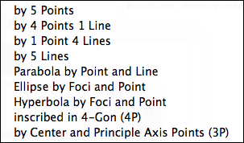

Conic Operations
There are four conic operations that are accessible by buttons:
 | Conic by Five Points |
 | Ellipse by Foci |
 | Parabola by Focus and Directrix |
 | Hyperbola by Foci |
Besides these four operations, there are also several others that are accessible by the menu only. In this section we will briefly sketch the use of these modes. All of these modes are definition modes that ask for a selection of input elements. The complete conic mode menu consists of the following entries:
 |
| Conic mode menu |
Conic by Five Lines
Just as one can show that a conic is uniquely defined by five of its points, one can also show that a conic is uniquely defined by five tangent lines. This mode makes this functionality accessible. To use it, simply select the five lines before or after invoking the mode.
Conic by Four Points and a Line
There are two conics that simultaneously pass through four points and are tangent to a line. This mode allows one to construct these conics by selecting the defining elements.
Conic by Four Lines and a Point
There are also two conics that simultaneously are tangent to four lines and pass through one point. This mode allows one to construct these conics by selecting the defining elements.
The pictures below give examples for the three above-mentioned modes:
 |  |  | ||
| Five lines | Four points / one line | One point / four lines |
Conic Inscribed in a Four-gon
This mode is very convenient for constructing perspective drawings. It generates a conic that is inscribed in a four-gon. The conic is constructed in such a way that the final picture corresponds to the perspective drawing of a circle inscribed in a square. To define it one has to click the four points in cyclic order.
Conic by Center and principal Axes Points
A conic is very often characterized by its principal axes and a point on each of them. This mode allows you to construct an ellipse by the center and two points on the principal axes through which it should pass.
The pictures below give examples of the two above-mentioned modes.
 |  |
|
| Inscribed conic | Conic by principal axes |
See Also
Page last modified on Wednesday 24 of August, 2011 [16:52:45 UTC].
The original document is available at
http://doc.cinderella.de/tiki-index.php?page=Conic%20Operations